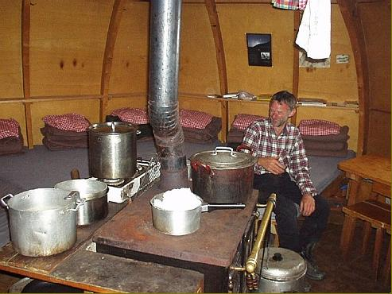
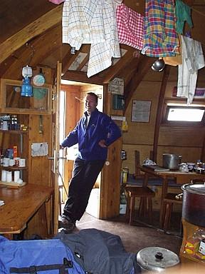

Igloo des Pantalons Blancs 3.280 m (Valais - CH)
Voordeur en zicht op Mont Blanc de Cheilon (links)

IJs smelten in de centrale keuken omgeven door de matrasenruimte

De keuken is goed uitgerust, alles is voorzien.
(foto's: © Dirk van laer)
Igloo des Pantalons Blanc
Startpagina (Home)